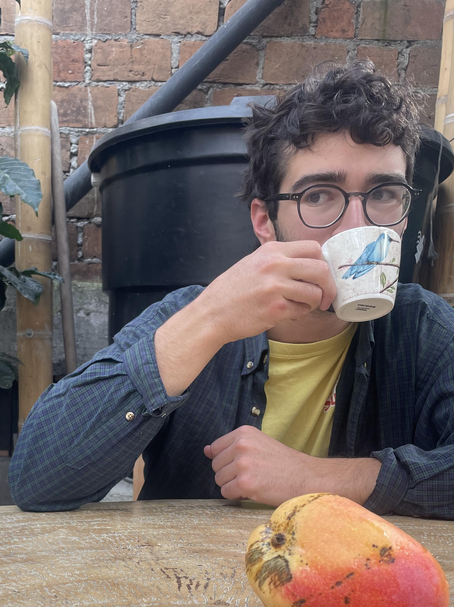

Noah Geffroyd (he/him) is a writer, journalist, and filmmaker from Montreal. His writing has appeared online in places like Crab Apple Literary and Sounds and Colours. He loves making dinner for loved ones and swapping stories. Check out his other projects on his website noahgeff.hotglue.me.
Marcel Goh (he/him) is a PhD student studying Mathematics at McGill University. His short story “The Vigil” was featured in Best Canadian Stories 2025, and his short memoir “Lanterns” won the Malahat Review's 2024 Constance Rooke CNF Prize. His writing has also appeared in Ricepaper, Existere, and The Prairie Journal. He can be found online at marcelgoh.ca.
Jonah Saks (he/him) is a writer from Montreal. You can find some of his poetry in Crab Apple Literary and Rainbug Poetry Review. He loves to compose music for the guitar and is an avid performer. Math is cool too. Find him at jonahsaks.github.io.